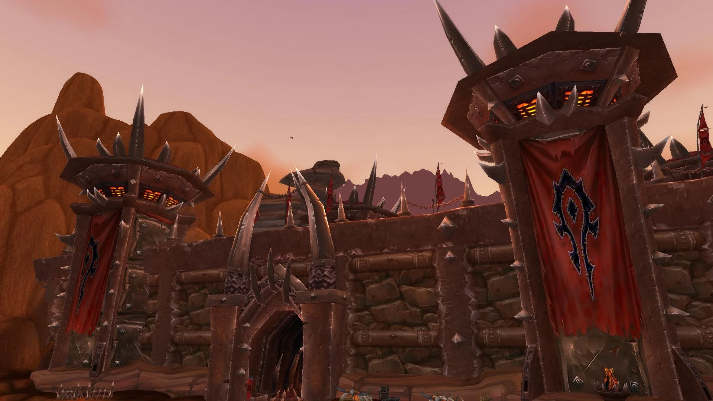
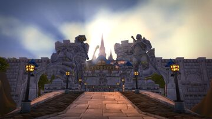
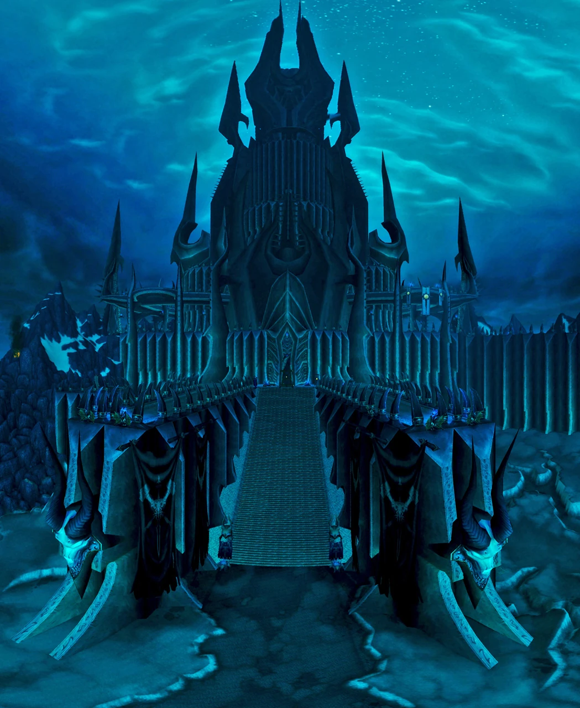
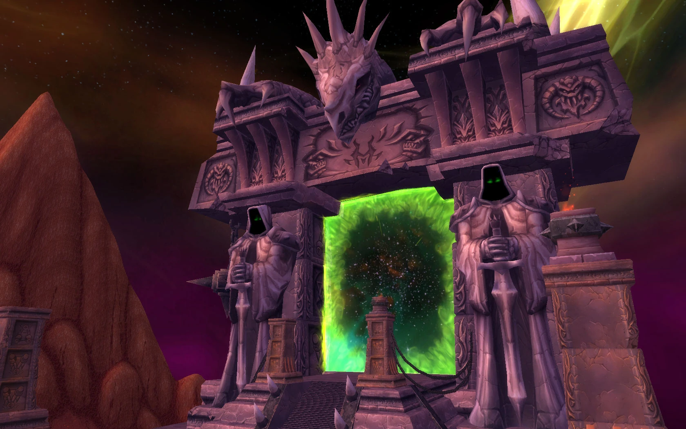
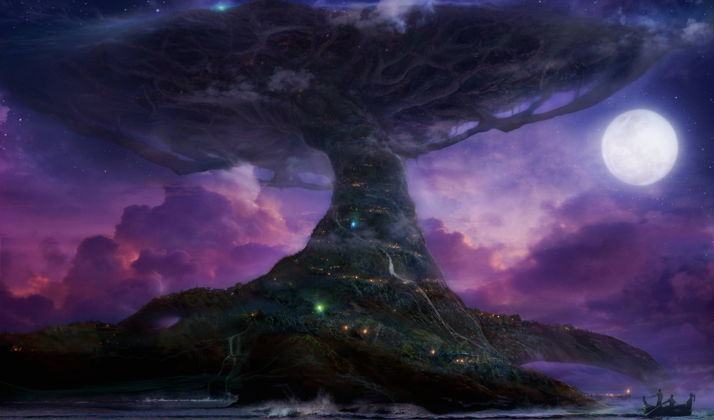

| Photo |
Name |
Brief Description |
|  |
Orgrimmar |
The capital city of the Horde, located in Durotar, is a bustling hub of orcish strength and resilience, established by Thrall after the Horde's exodus from the Eastern Kingdoms. |
|  |
Stormwind |
The grand capital of the human kingdom of Stormwind in the Eastern Kingdoms, this Alliance stronghold is renowned for its towering architecture and serves as a central hub for Alliance players. |
|  |
Icecrown Citadel |
Located in Northrend, this frozen fortress was the seat of the Lich King's power and the climactic setting for the epic Wrath of the Lich King expansion. |
|  |
The Dark Portal |
Situated in the Blasted Lands, this iconic gateway connects Azeroth to the shattered world of Outland, marking the starting point of the Burning Crusade expansion. |
|  |
Teldrassil |
Once the ancestral home of the night elves, this massive world tree tragically burned during Sylvanas Windrunner’s assault, marking a pivotal moment in the Battle for Azeroth expansion. |
 |
Thunder Bluff |
The majestic capital of the Tauren, located in Mulgore, this city is built on towering mesas and symbolizes the peaceful yet resilient spirit of the Tauren people. |